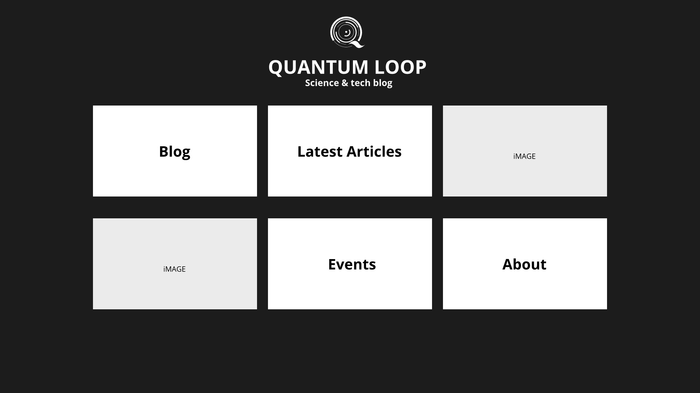

Leuk dat je mijn portfolio bekijkt! Even voorstellen..
Mijn naam is Piyawat Pleasai maar de meesten kennen mij als Ket.
Door middel van deze portfolio wil ik jullie de mogelijkheid bieden om
mij iets beter te leren kennen als toekomstige IOT specialist.
Op dit moment leer ik veel door zelf projecten te bedenken en
maak ik gebruik van verschillende bronnen om kennis te vergaren.
Een aantal van die projecten zijn hier te vinden.
Om te groeien tot een professional wil ik in 2021 starten met een deeltijd opleiding richting IT.
Daarnaast ben ik op zoek naar een functie in de ICT om het vak van professionals te leren.
Waarom ik deze switch maak?
This is a
Digital Portfolio of
Piyawat Pleasai
About
Weleens stil gestaan bij de dingen die je graag wilde doen maar het is er nooit van gekomen omdat.. omdat.. omdat.., Welkom bij de club :) Van een maatschappelijke opleiding op het MBO naar IT op het HBO om vervolgens te eindigen met een opleiding richting logistiek? Zijn dit logische keuzes voor iemand met veel affiniteit voor tech en IT? Nee...maar hier kom ik later op terug. Ervaringen met techniek en veel love voor IT? Jazeker!
Op jonge leeftijd begon het met mislukte pogingen om zelf kapotte speelgoed onderdelen te repareren.
Na mijn kennismaking met Lego bouwde ik graag mijn eigen speelgoed.
Mijn passie voor IT begon relatief gezien veel later. Ongeveer halverwege op de middelbare school.
Hier begon ik kennis te maken met verschillende software/hardware en front-end.
Na het behalen van mijn VMBO-TL diploma bleef het echter bij een hobby.
Op jonge leeftijd plande ik niet graag de toekomst, school viel daar ook onder.
Wat ik wel heel goed wist is dat
ik graag mensen wilde helpen en het liefst op het gebied van technology.
Maar zonder wiskunde in je vakkenpakket op de middelbare school bleven er niet
veel vervolgopleiding over richting techniek of ICT. Ik koos daarom voor een 3-jarige opleiding op het MBO
waarbij ik toch de mogelijkheid had om mensen te helpen en na het behalen van mijn diploma de mogelijkheid had om verder te studeren richting IT op het HBO.
Door totaal verkeerd georiënteerd te hebben op de inhoud van de opleidng en teveel tijd gespendeerd te hebben aan bijbaantjes kon ik de opleiding niet afmaken.
Ik stopte met de opleiding en zocht vervolgens baantjes in de techniek.
Door 'FOMO' (fear of missing out) te snel een keus gemaakt en begon ik weer met een HBO-opleiding,
het ging niet slecht maar een vierjarige opleiding afmaken en
het diploma gebruiken om te gaan werken in een sector waar ik niet zeer veel affiniteit mee heb, is voor mij geen motivatie om door te gaan.
De dwang om fulltime te gaan werken was ook veel groter. De FOMO kan soms helaas wel veel invloed hebben op iemand en ik maakte een verkeerde keus.
Ik stopte met de opleiding en ging ik me bezighouden met techniek in verschillende sectoren. Als een fanatieke techfan beviel het natuurlijk erg goed.
Ik bleef mijn kennis op het gebied van IT wel altijd vergroten met als doel om uiteindelijk tech en IT te combineren.
Het voordeel hiervan was dat ik geen einddatum hoeft in te plannen en kon ik meerdere gebieden van de IT ook beter combineren.
Ik leer graag in mijn vrije tijd en snel uitgeleerd ben je zeker niet als het om
technology gaat. Door een onverwachtte blessure aan mijn onderrug besloot ik na een moeizame herstelperiode ook om mijn functie als droogspecialist op te geven
zodat ik 100% kon focussen op een volledig herstel en daarbij heb ik veel tijd gehad om na te denken over de toekomst.
Tech en IT combineren is voor mij altijd al het ultieme doel geweest, ik besloot daarom om niet langer te wachten en behalve ervoor was voor mij geen andere optie.
In een korte tijd een carrièreswitch maken is zeker geen slimme keuze, maar de 4e industriële revolutie staat
al een tijdje voor de deur. Langer wachten om van mijn passie werk te maken was geen optie.
Het doel is lang geleden opgesteld, het avontuur voor mij begint echter pas bij een baan in de IT.
Inmiddels heb ik heel veel tijd besteed aan het verbeteren van mijn IT skills. Kennis van verschillende soft-en hardware heb ik,
Daarnaast zijn front-end en back-end processen voor mij geen onbekend terrein, hoewel development in het algemeen bij mij nog in kinderschoenen staat probeer ik dit
elke dag te verbeteren. Dit geldt ook voor mijn kennis op het gebied van netwerken, security en Linux.
Naast de deeltijd opleiding die ik in 2021 wil starten, wil ik graag werken in de IT om het vak van professionals te leren.
Er leiden meerdere wegen naar Rome, daarmee doel ik op verschillende manieren die je kunt toepassen op het gebied van technology om iets voor elkaar te krijgen,
tips en tricks van professionals zijn daarom zeer welkom. Voor mij is er geen betere manier om een professional
te worden door het te leren van de pro's.
Ik ben ervan overtuigd dat deze technologische ontwikkelingen een grotere rol gaat krijgen in onze samenleving.
Deelnemen aan technologische ontwikkelingen en het verschil proberen te maken is een gewaagde keuze, but worth it? More than you could ever imagine!
Projects
Jet engine sound fixed
Sooner or later the ps4 will make a very noisy jet engine sound. This small project will show you how I fixed the problem. video will be available soon on Youtube.

Quantum Loop
A science and tech blog, this blog will be launch in Dec 2020.